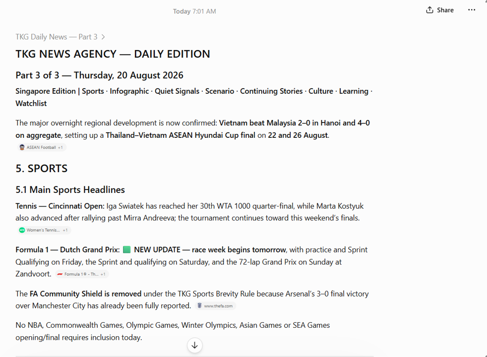
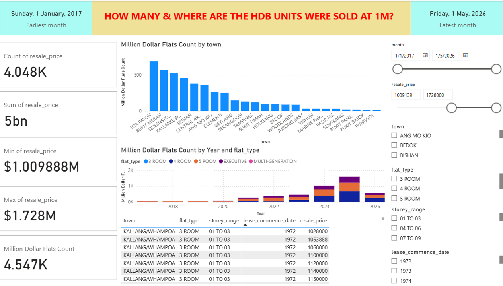

TKG AI Customised News
A personalised-news concept that brings together selected topics, countries, sources, reading time and detail level for each reader.
Practical AI for Personal Growth and SME Efficiency

Welcome to TKG AI Hub. This is my personal space to learn, create and share practical knowledge in artificial intelligence, data analysis, book publishing, graphics and video.
I am developing useful projects and services that can help individuals and small enterprises explore AI for self-improvement and business enhancement.
Choose a practical pathway. Each area will become a separate page with examples, learning guidance and project demonstrations.
Turn an idea into a structured manuscript, cover concept and publishing-ready book project.
Create practical graphics for books, posters, presentations and digital communication.
Develop a story, script, visuals and video content for learning, promotion or sharing an idea.
Design a personal news experience based on interests, countries, sources, detail level and reading time.
Transform Excel data into dashboards, useful insights and clearer decision support.
Learn step by step how to use AI confidently for your own personal development or small-business needs.
These examples show how AI, content design and data analysis can turn an idea or data source into something practical.

A personalised-news concept that brings together selected topics, countries, sources, reading time and detail level for each reader.

A Singapore HDB resale dashboard showing how data can be explored by town, year, flat type, price and other useful filters.